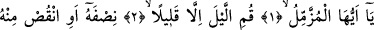
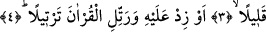

GECELERİ KALK
NAMAZ KIL
Bismillâhirrahmânirrahîm
1. Ey örtünüp bürünen (Rasûlüm)!
2. Birazı hâriç, geceleri kalk namaz kıl.
3. (Gecenin) yarısını (kıl). Yahut bunu biraz azalt,
4. Ya da çoğalt ve Kur’an’ı tane tane oku.
“Efendimiz bir gece örtüsüne bürünmüş uyuyordu.”[147] Bunun üzerine kendisine
örtünmeyi bırakması ve ibâdete yönelmesi, uykuya teheccüd namazını tercih etmesi
emrolundu.
İbn Abbas (r.a.) der ki: Cebrâil O’na (s.a.) ilk kez geldiğinde korktu ve kendisini cin
çarpmış olabileceğini zannetti. Hira-Nur dağından titreye titreye hanımı Hz. Hatice’nin
evine döndü ve “beni örtünüz” dedi. İşte elbisesine bürünüp yattığı esnâda tekrar
Cebrâil aleyhisselâm geldi ve “Ey bürünen” diye kendisine seslendi. İkrime’ye göre
âyet-i kerîmenin mânâsı şöyledir: “Ey büyük görevi üstlenen kişi!” İkrime’nin âyete bu
mânâyı vermesi “el-Müzzemmil” kökünün, taşımak anlamına da gelmiş olmasından
dolayıdır.
Süheylî ise şöyle der: “el-Müzzemmil” Peygamber (s.a.)’in bilinen meşhûr
isimlerinden birisi değildir. Bâzıları bu kanâate varmış ve bu kelimeyi onun
isimlerinden saymışlarsa da bu doğru değildir. Aksine “müzzemmil” Peygamber
(s.a.)’in kendisine hitâb edildiği andaki hâline göre türetilmiş bir kelimedir. Nitekim
“el-Müddessir” ismi de aynen böyledir.
Peygamber (s.a.)’e bu isimle hitâb edilmesinin iki faydası vardır: Bunlardan birincisi
ona latifedir. Çünkü Araplar karşılarında hitâb ettikleri kişi ile latife yapmak ve
karşısındaki kişiyi kınamadıklarını hissettirmek istediklerinde bu kişiye bulunmuş
olduğu hâli ifâde eden fiilden türeme bir isim verirlerdi. Buna Peygamber (s.a.)
Efendimiz’in Hz. Ali’ye söylemiş olduğu “Yâ Ebâ Türâb” sözünü örnek olarak
verebiliriz.
Bir gün Hz. Ali ile Peygamberimizin kızı Hz. Fâtıma karşılıklı olarak birbirlerine
öfkelenmişler, Hz. Ali dışarı çıkıp toprağın üzerine yatarak uykuya dalmıştı. İşte bu